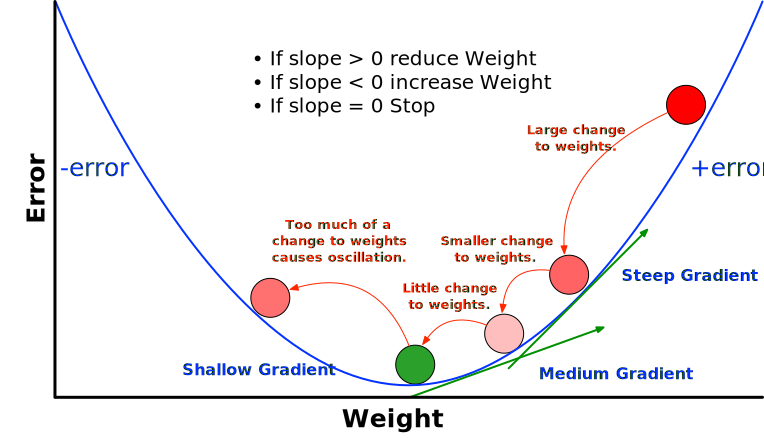

The backpropagation algorithm feeds the input vector to the neural network forward to the output layer, computes the error for each output node and then propagates the error back through each layer of the network for weight adjustment. The main steps involved are shown in the following algorithm:
Initialise weights to random numbers in range
Keep doing epochs
For each example in the training set Do
Feedforward {X1, X2,…,Xn} to each node n
Y = output(n)
error = (Yd - Y) at each output neuron
Backpropagate error to calculate deltas to weights
Update all weights
End For
Until training set error stops improving
The algorithm uses gradient descent to minimise the training error by finding the lowest point on the error surface as shown below. If the slope is very steep, then a large change will be made to the weights. As the algorithm progressively approaches the optimal weights for each layer, the error rate will reduce and smaller changes will be made to the weights.

The slope of the gradient is computed using the derivative of the activation function for each layer. The derivative of a function y = f(x) is a measure of the rate at which the value y of the function changes with respect to x, i.e. its slope. In this implementation, the sum of the squared errors is used to determine if the actual v/s expected outputs have converged.
The weights between each layer in the network are updated using the Delta Rule: Δwni = α * (ydn - yn) * f'(hn) * xi where n is a node or neuron, i is n's ith weight, α is the learning rate, f' is the derivative of the activation function used at the layer, ydn is the desired output, yn is the actual output, hnis the weighted sum of n's inputs and xi is the ith input.
Changing the value of the learning rate (α) is one of the most effective ways of accelerating convergence. A small value for α will result in smaller changes to the weights, a slower rate of learning and a smooth learning curve. Using a large α value will accelerate learning, but may induce instability to the neural network and cause oscillations (swinging between positive and negative errors) and abrupt changes to outputs. A small value for α can be compared to taking a 4 year computing degree at a university: it will take you a long time to finish, but you will be well-trained and well-prepared when you do. A high value for α is like taking a 6 or 12 month accelerated course in computing. You will have to learn very quickly, but the depth of learning will not be the same as a 4-year degree course and you might find that you've mastered very little at the end of the training. A common technique to accelerate learning is to add an extra momentum parameter (β) to the delta rule to accelerate gradient descent, where 0 ≤ β < 1. A β value of 0.95 is often used for momentum.
- Since:
- Aicme4j 1.0
- Author:
- Dr. John Healy, ATU.
-
Method Summary
Modifier and TypeMethodDescriptiontrain(double[][] data, double[][] desired, double alpha, double momentum, int epochs, double maxError, Loss loss, boolean softmax) Trains a valid instance ofNeuralNetworkusing the backpropagation algorithm.
-
Method Details
-
train
public TrainingStatistics train(double[][] data, double[][] desired, double alpha, double momentum, int epochs, double maxError, Loss loss, boolean softmax) throws Exception Trains a valid instance ofNeuralNetworkusing the backpropagation algorithm.- Parameters:
data- the data set to use for the supervised trainingdesired- the expected output for each row in the training setalpha- the learning rate of the training algorithmmomentum- a hyperparameter to help control the rate of gradient descentepochs- the maximum number of epochs used in the trainingmaxError- maxError the maximum error of the trainingloss- the loss function to use in the trainingsoftmax- transform the output layer into a probability distribution- Returns:
- a trained instance of NetworkBuilder
- Throws:
Exception- if the network topology has not been correctly configured or the training algorithm encountered a problem like a vanishing or exploding gradient.
-